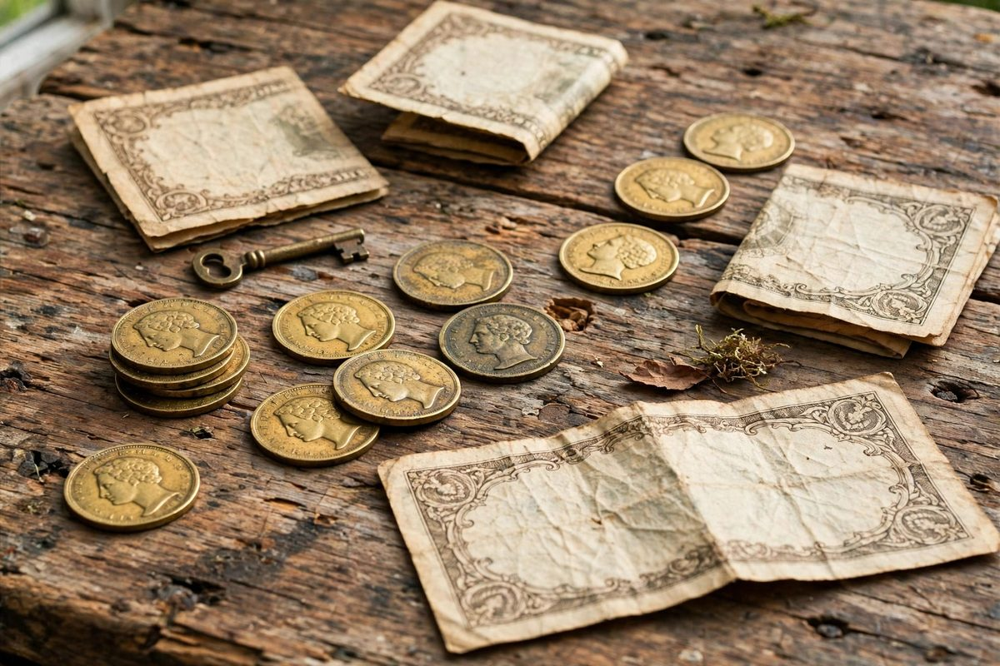

A Short History of Exchange Rates: Gold, Bretton Woods and Floating Money

The gold standard
For much of the nineteenth and early twentieth centuries, major currencies were tied to gold. A pound, a dollar, or a franc could be exchanged for a fixed weight of gold, and exchange rates between currencies were therefore fixed by their gold content. The system gave remarkable stability: rates barely moved, trade flourished, and inflation was low. But it was rigid, because a country could not increase its money supply without more gold, and it broke down under the strain of the First World War, when governments printed money to pay for the conflict.
Attempts to restore the gold standard in the 1920s failed, and the Great Depression finished it. Countries that clung to gold suffered deeper deflation, while those that left it recovered faster. The lesson was that a fixed system brings stability but removes the freedom to respond to a crisis, a trade-off that still shapes currency debates today.
Bretton Woods and the dollar
After the Second World War, the Bretton Woods agreement created a new system: currencies were pegged to the US dollar, and the dollar was pegged to gold at 35 dollars per ounce. The system worked for twenty-five years, supporting a long boom in trade and growth, but it depended on the United States running balanced policies, and by the late 1960s the US was printing more dollars than its gold reserves could support.
In 1971, President Nixon ended the dollar's convertibility into gold, and by 1973 the major currencies were floating freely against each other. The change was meant to be temporary, but it became permanent, and the floating system has lasted for fifty years. Floating rates gave countries freedom to set their own monetary policy, at the cost of volatility that businesses and travellers still live with today.
What history teaches
History shows that no exchange rate system lasts forever, and each one trades stability for flexibility. Fixed rates are calm until they break, and floating rates are flexible but volatile. It also shows that currency crises often follow periods of overconfidence, when a peg looks permanent until it suddenly is not, as in the Asian financial crisis of 1997 or the pound's exit from the European Exchange Rate Mechanism in 1992.
For ordinary users, the lesson is practical: never assume today's rate will last, and never assume a fixed rate is truly fixed. Check the rate before any large conversion, keep a buffer for moves, and remember that the system that governs your money has changed before and will change again.
Putting It Into Practice
Look up the exchange rate for a currency pair you care about ten years ago and compare it with today, then find one major event in between, such as a financial crisis or a change of government, and see how the rate reacted. This short exercise shows how much rates can move over a decade and why no rate should be assumed permanent. It also explains why the best habit for anyone converting money is not prediction but preparation: a buffer, a good provider, and a plan.
Frequently Asked Questions
What was the gold standard?
A system where currencies were tied to a fixed weight of gold, making exchange rates stable but rigid.
What was Bretton Woods?
The post-war system that pegged currencies to the US dollar, which was itself pegged to gold, until it collapsed in 1971.
Why do currencies float today?
Because the Bretton Woods system broke down in the early 1970s, and floating rates let countries set their own monetary policy.